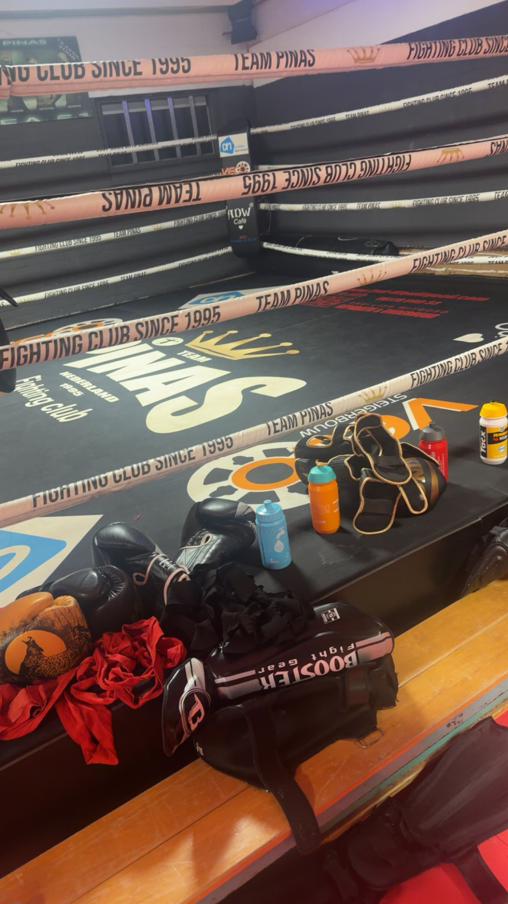

kickboksen
Ik doe al ongeveer zes jaar aan kickboksen. Ik ben ermee begonnen door mijn moeder. Toen ik klein was, werd ik veel gepest en had ik niet veel zelfvertrouwen. Ik wilde sterker worden en mezelf beter kunnen verdedigen. In het begin vond ik het spannend, maar door steeds naar de trainingen te gaan, raakte ik eraan gewend en kreeg ik steeds meer zelfvertrouwen.
Wat ik leuk vind aan kickboksen
is dat je vooral op jezelf kunt vertrouwen. Het is geen teamsport en je hebt niet veel nodig om te kunnen trainen. Ik vind eigenlijk alles leuk aan de sport, vooral combinaties maken en steeds nieuwe technieken leren.
Ik train drie keer per week en probeer altijd naar de training te gaan, ook als het regent of hard waait. Dat heeft mij veel discipline geleerd. Soms spar ik tegen iemand die sterker of beter is dan ik. Op zulke momenten denk ik soms: “Waarom doe ik dit?” Toch blijf ik doorgaan, omdat ik weet dat je beter wordt door moeilijke momenten niet op te geven.
Door het kickboksen ben ik veel veranderd. Vroeger was ik wat dikker, had ik weinig zelfvertrouwen en was ik heel luid. Nu ben ik rustiger en heb ik veel meer zelfvertrouwen. Ik heb door kickboksen ook goede vrienden leren kennen. We trainen samen, doen wedstrijden en motiveren elkaar. Daardoor voelt mijn kickboksschool als een hechte groep.
Ik zie mezelf later niet als professionele kickbokser. Voor mij is het vooral belangrijk om fit te blijven, mezelf te blijven ontwikkelen en plezier te hebben in de sport. Ik ben blij dat ik ooit de eerste stap heb gezet, want kickboksen heeft mij niet alleen fysiek sterker gemaakt, maar ook mentaal.
